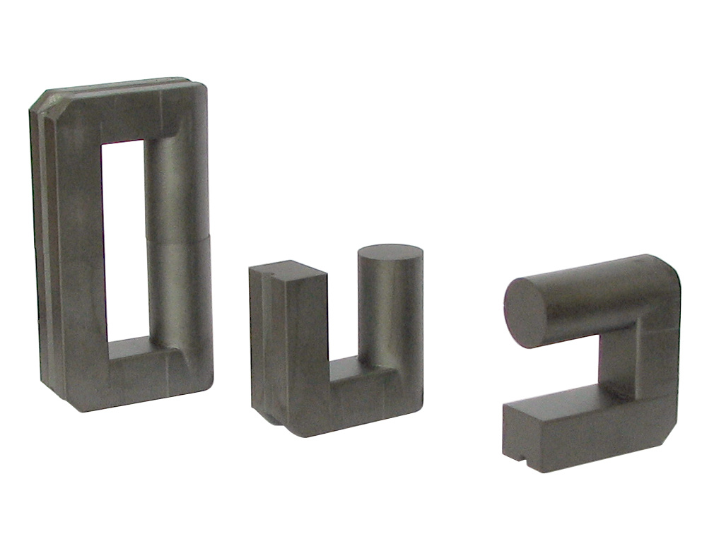
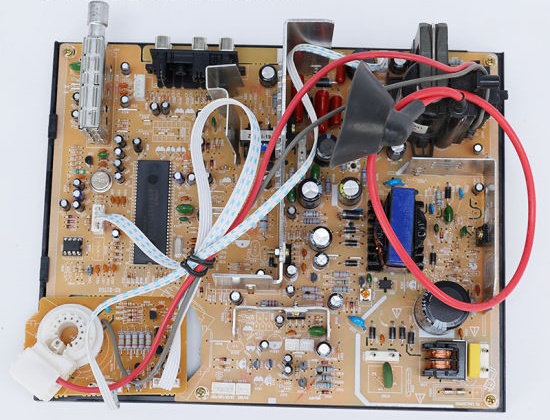
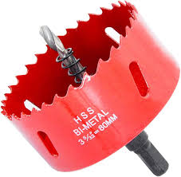
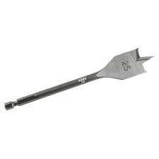
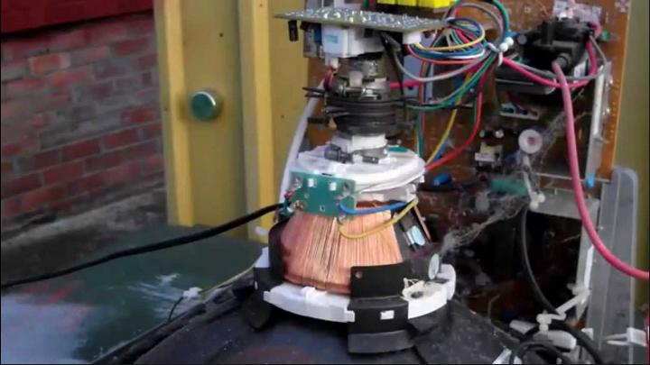
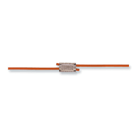
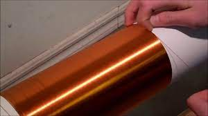
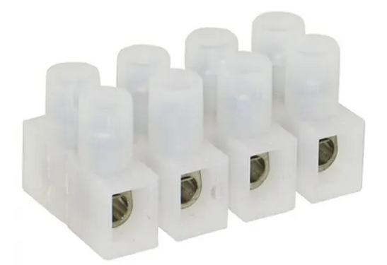
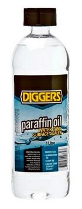
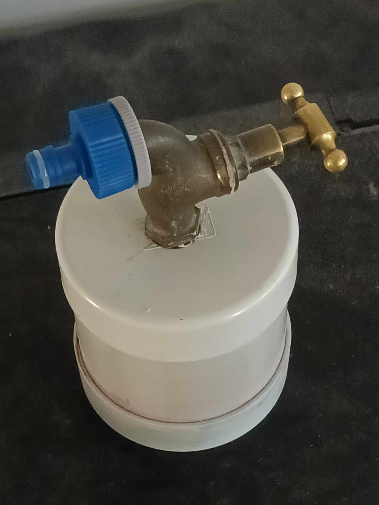

Flyback Transformers
Building Your Own Transformer
The Core
First of all you will need to obtain a core, which look like this:

You can salvage them from the circuit board of old cathode ray TVs and monitors:

In this example you can see the flyback transformer in
the upper right corner, and also the core. It takes a bit of
effort to de-solder the flyback transformer from the circuit
board because their are 9 to 12 pins.
The black plastic structure around it contain the primary
and secondary windings embedded in epoxy resin. You can use
the flyback transformer as is however there is a lot of
messing around with a multimter to figure out which pins are
attached to the primary winding and which are attached
attached to the high voltage secondary winding.These flyback
transformers also contain rectifier diodes and generate high
voltage DC current which limit what projects you can use
them for. For example you can't use them to drive a plasma
globe as they require AC high voltage current.
Once it is off the circuit board to can proceed to remove the core. But you need to do this carefully because the core is generally held in the plastic assembly with dobs of hot glue. This must be carefully picked away to free the core. The ferrite cores are rather fragile and will easily break if you try an lever out the two halves if the core with a screw driver for example.
Make Your Own Bobbin

This will be for the secondary transformer winding that will generate the high voltage.
The first thing you need to find is a plastic pipe that nicely fits around the cylinderical part of the ferrite core without rattling around too much. Smaller diameter PVC pressure pipe or electrical conduit might be suitable. It is just a matter of hunting around until you find something suitable.
If you luck in you might be able to find a complete bobbin for electrical wire that is just the right size.
Next you need to cut a length of pipe to the exact length that fits inside the core with the two halves joined. It should be a snug fit and should not move up and down inside the core.
Next you need to make some end disks for the bobbin. You can make them out of presepex or PVC sheet. If hard pressed you can cut a short length of large diameter PVC pipe, slit it down its length, heat it in the oven at 120 degrees for 10 minutes until it becomes soft and pliable and then sandwich it between 2 heavy sheets of MDF with a car b attery or something else heavy to weigh the top sheet down. The PVC will re-harden into a flat sheet.
Use a 4-5cm diameter hole saw to cut out two disks:

Then you will need to enlarge the hole at the center of the disks to fit snuggly around the PVC pipe. You can use a smaller diameter hole saw or a spade bit:

You may need to use some sand paper wrapped around a piece of dowel or PVC pipe, as a round file, to smooth off the edges of the inner hole. Also lightly sand the ends of the PVC pipe to provide a rough surface for the glue to key onto.
Make sure all the surfaces are free from greece and dirt - clean everything with some soapy water and allow them to dry thoroughly.
Mix up some 2 part epoxy glue and coat the end of the PVC
pipe and stand it on a pefectly flat surface. Next slide one
fo the disks down the pipe and over the glue. Make sure the
PVC pipe is pefectly vertical and that the disk and the end
of the pipe are flush.
You can use a tooth pick to make sure the gap between the
disk and the pipe is evenly filled with glue. Clean off any
excess with methylated spirits before the glue hardens.
Don't use too much metho or it will dissolve away the glue
from the gap. Waith for the epoxy glue to harden and then
repeat the process for the other end of the pipe.
You will then need to drill a small hole in one of the disks flush with the pipe. When you start winding you will first poke the wire through this hole and sucure it inside the pipe.
Magnet Wire
Old cathod ray TVs also have a good supply of magnet wire.

You can see the magnet wire on those funny shaped ferrite cores. This whole plastic assembly is quite easy to break apart. You will need to cut the wires to free the ferrite cores. Then wind the magnet wire onto a handly bobbin or length of thick dowel. There are usually dobs of hot glue on the ferrite cores to prevent the magnet wire from unravelling. However it is easy to break this apart and scrape it off the magnet wire with your finger nails.
If you need more length and if you have a steady hand then it is possible to join lengths of magnet wire together in a similar way to this, except with solder.

You can restore the insulation around the solder joint with a smear of epoxy glue.
Of course if you can't be bothered with salvaging the magnet wire then you can always buy a reel of it. AWG 23 to 28 is OK.
Winding The Secondary Coil
This is a Tesla Coil secondary coil but the idea is the same:

Once you reach the end of the bobbin wrap the winding
with one layer of duct tape with the ends overlapping. Make
sure the duct tape rides up the disks slightly so the wire
of the next layer can't slip off the end of the duct tape
and contact the wire of the winding below. Also do a right
angle bend in the wire and take it back to the side of the
bobbin you started winding from over the top of the PVC
tape. Then take the remaining overlapping duct tape and
stick it down.
Repeat this process as many times as it takes to fill up the
bobbin almost to the edge of the disks.
The PVC tape between layers of windings prevents HV
discahrges inside the coil between layers if windings. The
break down voltage of PVC tape is around 10kV and the
difference between layers of windings should be less than
that.
Electrical Contacts
You can stick 2x of these terminal blocks to each of the bobbin disks, without obstructing the lumen of the pipe.

You will need to lightly sand the edges of the bobbin disks and the bottom of the terminal blocks. This allows the glue to gain purchase. Two of these terminal blocks will provide a greater surface area for the glue, but you will only need to use one side.
Glue these at either end og the bobbin the distance between them, as well as the fact the terminal blocks will be submerged in oil, will pevent any unauthorised HV discharges.
You will need to strip the ends of the magnet wire with a match and some fine emery paper. Fold the end of the wire 2-3 times and solder the folds together. This will provide a large target for the screws of the terminal block to bite on to.
Into the other end of the terminal block clamp a short length of much thicker diameter wire. This will be easier to handle than the fine magnet wire. The inner conductors of standard house hold apliance cables are ideal.
Transformer Oil
It is a good idea to submerge the whole transformer in oil to further reduce the likelhood of HV discharges within the transformer. An ideal oil is liquid paraffin or baby oil. It has a much higher break down voltage than does air.

You also need to expose the trasnformer submerged in oil to a vacuum for a day or so. This is to make sure that as much air as possible is sucked out from between the layers of windwings and PVC tape.
I did it with a short length of PVC pipe with two end caps. One end cap is glued on permanently while the other is glued on temporarily with a bead of silcone sealant along the edge of the PVC cap.
I have isntalled a tap in this PVC cap with rubber washers of taps sealing the hole. I used a brass nut on the inside of the cap to create a tight seal.
Then I simply used my mouth and tongue to draw out as much air as I could and then closed the tap.

The Driver Circuit